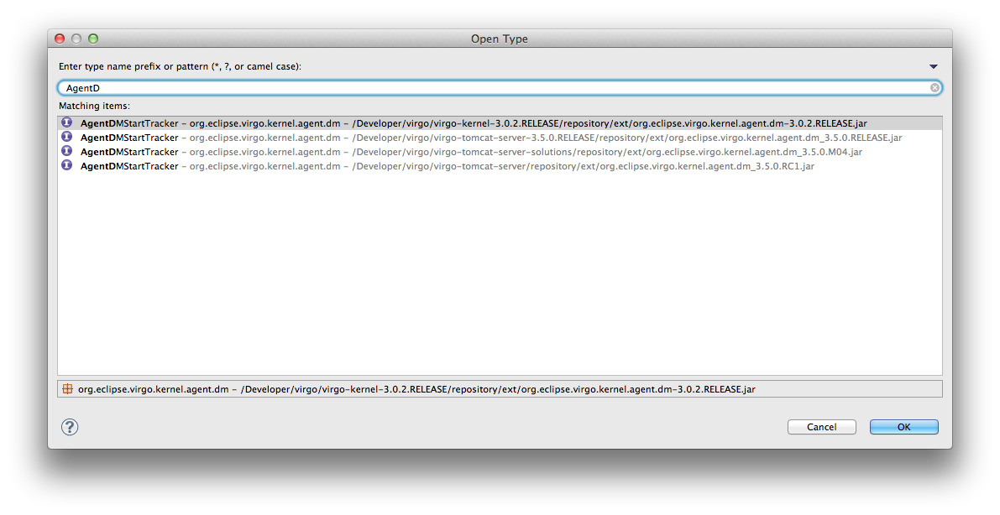

To support all of the view features, projects are created within your workspace. These are managed automatically and shouldn't be modified, deleted or renamed. But you can explore these artifacts directly from the project and package explorers and with other Eclipse tools.
Hint: For example, you can find out what classes are available on Virgo Servers using the Type and Resource search dialogs. Just select and enter a search pattern.
